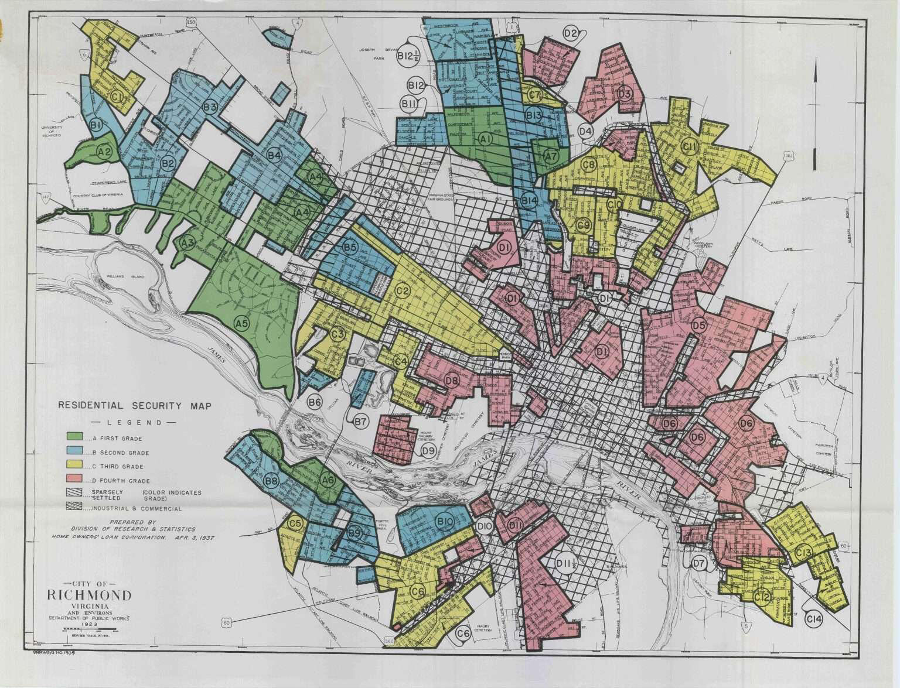
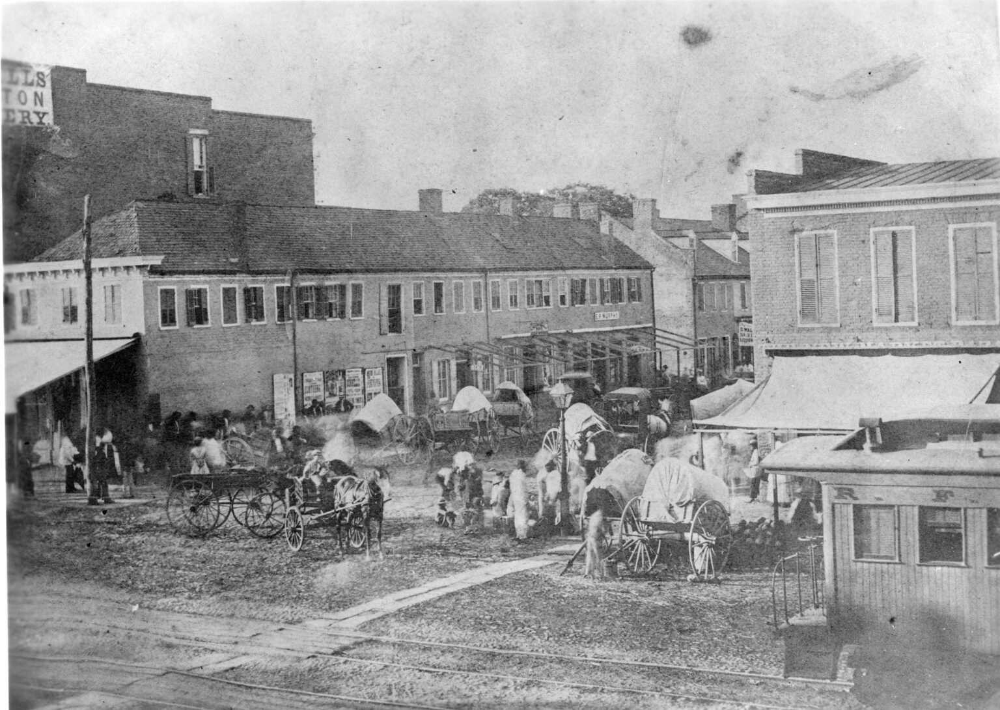
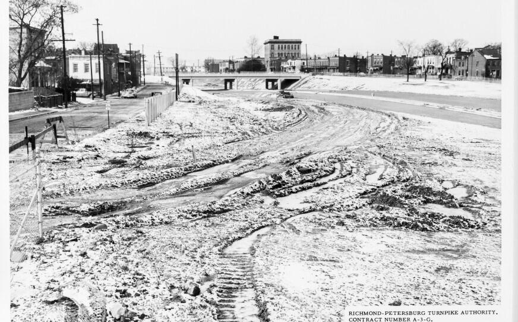

History
The History of Land Dispossession and Food Insecurity in Black Communities in Richmond.
For Black communities in Richmond, the struggle for land has been deeply intertwined with the broader fight for justice, autonomy, and survival.
Land & Dispossession
From enslavement to the Reconstruction era to the present day, Black land ownership has been systematically undermined through discriminatory policies, urban renewal projects, and economic displacement.
Redlining, restrictive zoning laws, and predatory lending practices have not only prevented Black families from acquiring and retaining land but have also shaped patterns of disinvestment that persist in Richmond's neighborhoods with large Black populations.

Displacement & Urban Renewal
Entire communities have been uprooted through highway expansion projects, such as the destruction of Jackson Ward, and through forced displacement under urban renewal programs.

These patterns of dispossession have directly contributed to the lack of access to healthy food and land ownership.

Agriculture as Resistance
Despite these challenges, Black Richmonders have continuously cultivated land as a form of resistance and self-sufficiency.
From backyard gardens to community plots, growing food has been a strategy for survival, cultural preservation, and economic independence.
Early gardening initiatives, such as developing small-scale community gardens in church yards and vacant lots, were not just about food production—they were acts of defiance against an unjust system.
From Community Gardening to Food Sovereignty
Over time, the language used to describe these efforts has shifted, reflecting the growing recognition of their political significance.
What was once considered "community gardening" has evolved into a broader movement for "urban farming" and "urban agriculture," with a clear emphasis on food sovereignty and land justice.
These terms signal a transformation from informal, small-scale efforts to a structured, organized movement that demands long-term land ownership and policy change.
Land Justice & Food Justice
Richmond's struggle for food justice cannot be separated from the struggle for land.
Where Black people have had secure access to land, they have been able to build sustainable, community-centered food systems. Where land has been taken, food insecurity has deepened.
The emergence of urban farming as a tool for empowerment is a response to these systemic barriers.
Through land reclamation, cooperative farming initiatives, and policy advocacy, Black urban farmers in Richmond are actively reshaping the landscape—both physically and politically.
Their efforts challenge the idea that food insecurity is a matter of personal responsibility and instead expose the structural forces that have created these conditions.